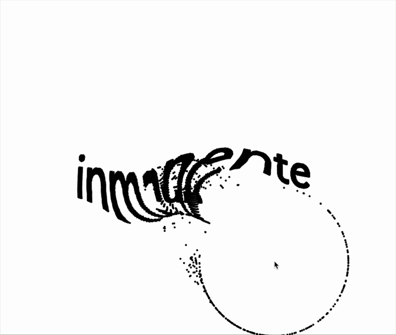

— ¡Hola! Soy Nicolás
Gerardi Rousset. Investigo la
relación entre:

escritura 
creativa, tecnología y
diseño  en
en  el
el
Caribe.
— ¡Hola! SoyNicolás
Gerardi Rousset.Investigo la
relación
entre:
escritura
creativa,tecnologíay
diseño
en
el
Caribe.